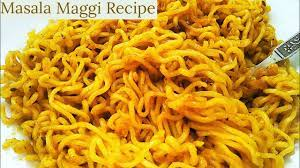

Maggi Masala Noodles

Description
Maggi masala noodles is a favourite go to snack for the people of Indian subcontinent as it is easy to cook and can
be made within a couple of minutes.
Ingredients
- Masala Maggi Noodles(4 cakes)
- Onions(2Nos)
- Green Chilly(3-4 Nos)
- Oil(1 table spoon)
- Water(2 cups)
- Coriander
Steps
- On the stove and pour 2 tablespoons of Oil in the pan and heat the oil for a while.
- After the oil is heated well
- Put two to three onions along with two to three green chillies
- Stir the mixture well and wait until the onions change colour.
- Add the taste maker provided along with the maggi package to the mixture and stir well.
- Add water to the mixture and wait until it begins to boil
- Add four cakes of the maggi masala noodles and cook for 3 to 4 minutes until the noodles are cooked well
- Serve the dish hot